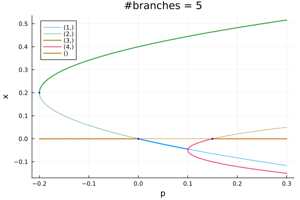
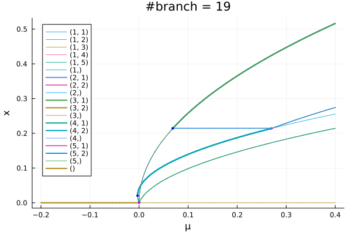
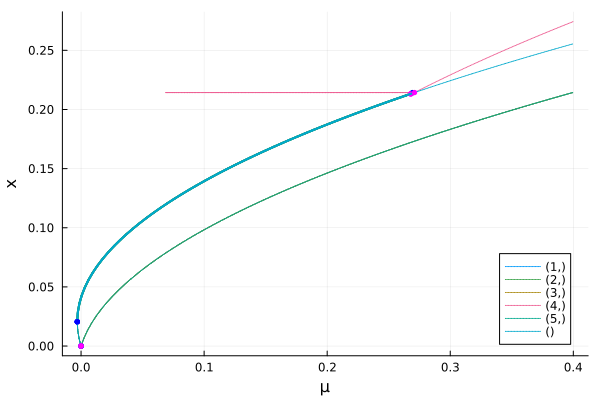

Automatic Bifurcation diagram computation
Thanks to the functionality presented in this part, we can compute the bifurcation diagram of a system recursively and fully automatically. More precisely, the function bifurcationdiagram allows to:
- compute a branch $\gamma$ of equilibria
- detect all bifurcations on the branch
- recursively compute the branches emanating from branch points on $\gamma$.
Pitfalls
For now, there is no way to decide if two branches $\gamma_1,\gamma_2$ are the same. As a consequence:
- there is no loop detection. Hence, if the branch $\gamma$ has a component akin to a circle, you may experience a large number of branches
- if the bifurcation diagram itself has loops (see example below), you may experience a large number of branches
The most useful options of bifurcationdiagram! are halfbranch = false (at Pitchfork / Transcritical points, compute only half of the branch, useful in presence of symmetries), usedeflation = false and verbosediagram = false (verbose specific to the computation of the diagram). You can also pass δp and ampfactor to tune the branch switching, see From equilibria to equilibria.
The whole diagram is stored in RAM and you should be careful when computing it on GPU. We'll add a file system for this in the future.
Basic example with simple branch points
using Revise, Plotsusing BifurcationKitFbp(u, p) = @. -u * (p + u * (2-5u)) * (p -.15 - u * (2+20u))# bifurcation problemprob = ODEBifProblem(Fbp, [0.0], -0.2, # specify the continuation parameter (@optic _); record_from_solution = (x, p; k...) -> x[1])# options for newton# we reduce a bit the tolerances to ease automatic branchingopt_newton = NewtonPar(tol = 1e-9)# options for continuationopts_br = ContinuationPar(dsmin = 0.001, dsmax = 0.005, ds = 0.001, newton_options = opt_newton, # parameter interval p_min = -1.0, p_max = .3, # detect bifurcations with bisection method # we increase here the precision for the detection of # bifurcation points n_inversion = 10)diagram = bifurcationdiagram(prob, PALC(), # very important parameter. This specifies the maximum amount of recursion # when computing the bifurcation diagram, i.e. the maximum number of # successive branches emanating from the first one. 2, opts_br,)# You can plot the diagram likeplot(diagram; putspecialptlegend = false, markersize=2, plotfold=false, title = "#branches = $(size(diagram))")
This gives
diagram[Bifurcation diagram]
┌─ From 0-th bifurcation point.
├─ Number of children: 4
└─ Root (recursion level 1)
┌─ Curve type: EquilibriumCont
├─ Number of points: 76
├─ Type of vectors: Vector{Float64}
├─ Parameter p starts at -0.2, ends at 0.3
├─ Algo: PALC [Secant]
└─ Special points:
- # 1, bp at p ≈ +0.00000011 ∈ (-0.00000000, +0.00000011), |δp|=1e-07, [converged], δ = ( 1, 0), step = 31
- # 2, bp at p ≈ +0.15000000 ∈ (+0.14999995, +0.15000000), |δp|=5e-08, [converged], δ = (-1, 0), step = 53
- # 3, endpoint at p ≈ +0.30000000, step = 75
Example with nonsimple branch points
To show the ability of the branch switching method to cope with non simple branch points, we look at the normal form of the Pitchfork with D6 symmetry which occurs frequently in problems with hexagonal symmetry. You may want to look at Bratu–Gelfand problem for a non trivial example of use.
using Revise, Plotsusing BifurcationKitconst BK = BifurcationKitfunction FbpD6(x, p) return [ p.μ * x[1] + (p.a * x[2] * x[3] - p.b * x[1]^3 - p.c*(x[2]^2 + x[3]^2) * x[1]), p.μ * x[2] + (p.a * x[1] * x[3] - p.b * x[2]^3 - p.c*(x[3]^2 + x[1]^2) * x[2]), p.μ * x[3] + (p.a * x[1] * x[2] - p.b * x[3]^3 - p.c*(x[2]^2 + x[1]^2) * x[3])]end# model parameterspard6 = (μ = -0.2, a = 0.3, b = 1.5, c = 2.9)# problemprob = ODEBifProblem(FbpD6, zeros(3), pard6, (@optic _.μ); record_from_solution = (x, p; k...) -> (n = norminf(x)))# newton optionsopt_newton = NewtonPar(tol = 1e-9, max_iterations = 20)# continuation optionsopts_br = ContinuationPar( # we limit the step size to have smooth branches dsmax = 0.005, ds = 0.001, # parameter interval p_max = 0.4, p_min = -0.25, newton_options = opt_newton, max_steps = 1000, # increased precision for bifurcation points n_inversion = 4, max_bisection_steps = 20)diagram = bifurcationdiagram(prob, PALC(), 3, opts_br; δp = 0.01, normC = norminf)[Bifurcation diagram]
┌─ From 0-th bifurcation point.
├─ Number of children: 5
└─ Root (recursion level 1)
┌─ Curve type: EquilibriumCont
├─ Number of points: 89
├─ Type of vectors: Vector{Float64}
├─ Parameter μ starts at -0.2, ends at 0.4
├─ Algo: PALC [Secant]
└─ Special points:
- # 1, nd at μ ≈ +0.00019961 ∈ (-0.00024233, +0.00019961), |δp|=4e-04, [converged], δ = ( 3, 0), step = 31
- # 2, endpoint at μ ≈ +0.40000000, step = 88
We can now plot the result:
plot(diagram; putspecialptlegend = false, markersize=2, plotfold=false, title="#branch = $(size(diagram))")
We can access the different branches with BK.get_branch(diagram, (1,)). Alternatively, you can plot a specific branch:
plot(BK.get_branch(diagram, (1,)), putspecialptlegend = false)
Computing a sub-part of the diagram
Finally, you can resume the computation of the bifurcation diagram if not complete by using the method bifurcationdiagram!
BK.bifurcationdiagram!(prob, # this resume the computation of the diagram from the 2nd node # diagram is written inplace get_branch(diagram, (2,)), 6, (args...) -> opts_br)[Bifurcation diagram]
┌─ From 1-th bifurcation point.
├─ Number of children: 4
└─ Root (recursion level 2)
┌─ Curve type: EquilibriumCont from NonSimpleBranchPoint bifurcation point.
├─ Number of points: 79
├─ Type of vectors: Vector{Float64}
├─ Parameter μ starts at 0.00019960742344131129, ends at 0.4
├─ Algo: PALC [Secant]
└─ Special points:
- # 1, bp at μ ≈ +0.00000176 ∈ (+0.00000176, +0.00000187), |δp|=1e-07, [converged], δ = (-1, 0), step = 1
- # 2, bp at μ ≈ +0.06887828 ∈ (+0.06883718, +0.06887828), |δp|=4e-05, [converged], δ = (-1, 0), step = 24
- # 3, endpoint at μ ≈ +0.40000000, step = 78
Printing the structure of the diagram
It is sometimes useful to have a global representation of the bifurcation diagram. Here, we provide a text representation
using AbstractTreesAbstractTrees.children(node::BK.BifDiagNode) = node.child## Things that make printing prettierAbstractTrees.printnode(io::IO, node::BifDiagNode) = print(io, "$(node.code) [ $(node.level)]")print_tree(diagram)0 [ 1]
├─ 1 [ 2]
│ ├─ 4 [ 3]
│ ├─ 4 [ 3]
│ ├─ 4 [ 3]
│ ├─ 4 [ 3]
│ └─ 4 [ 3]
├─ 1 [ 2]
│ ├─ 2 [ 3]
│ ├─ 2 [ 3]
│ ├─ 2 [ 3]
│ └─ 2 [ 3]
├─ 1 [ 2]
│ ├─ 2 [ 3]
│ └─ 2 [ 3]
├─ 1 [ 2]
│ ├─ 2 [ 3]
│ └─ 2 [ 3]
└─ 1 [ 2]
├─ 2 [ 3]
└─ 2 [ 3]Plotting the structure of the diagram
We can also use GraphPlot to plot the tree underlying the bifurcation diagram:
using LightGraphs, MetaGraphs, GraphPlotfunction graph_from_diagram!(_graph, diagram, indp) # ind is the index of the parent node # add vertex and associated information MetaGraphs.add_vertex!(_graph) MetaGraphs.set_props!(_graph, MetaGraphs.nv(_graph), Dict(:code => diagram.code, :level => diagram.level)) if MetaGraphs.nv(_graph) > 1 MetaGraphs.add_edge!(_graph, indp, MetaGraphs.nv(_graph)) end if length(diagram.child) > 0 # we now run through the children new_indp = MetaGraphs.nv(_graph) for diag in diagram.child graph_from_diagram!(_graph, diag, new_indp) end endendfunction graph_from_diagram(diagram) _g = MetaGraph() graph_from_diagram!(_g, diagram, 1) return _gend_g = graph_from_diagram(diagram)gplot(_g, nodelabel = [props(_g, ve)[:code] for ve in vertices(_g)])which gives the following picture. The node label represent the index of the bifurcation point from which the branch branches.
Using GraphRecipes
Another solution is to use GraphRecipes and
using GraphRecipesgraphplot(_g, node_weights = ones(MetaGraphs.nv(_g)).*10, names=[props(_g, ve)[:code] for ve in MetaGraphs.vertices(_g)], curvature_scalar=0.)